云南省中职职教高考职业技能考试说明（试行） 04 计算机信息类
一、考试性质和目的
职业技能考试是中职职教高考的重要组成部分。计算机信息类职业技能考试依据教育部《中等职业学校专业教学标准（试行）》组织实施，是面向报考计算机信息类专业考生的专业素质测试。
考试主要考查考生的职业素养、专业知识掌握情况、计算机信息类岗位技能和通用技术的运用能力，评价考生进入高等职业院校相关专业学习的基本素质和基本能力。评价结果作为高等职业院校招生录取的重要依据。
二、考试科目和分值
计算机信息类职业技能考试总分 400 分，包括专业理论测试、专业技能测试两个科目。
（一）科目一：专业理论测试
总分 200 分，考试时长 90 分钟。
（二）科目二：专业技能测试
总分 200 分，考试时长 30 分钟。
三、考试内容和形式
根据教育部 2017 年发布的《中等职业学校专业教学标准（信息技术类）》，选取《计算机应用基础》《常用工具软件》《程序设计》三门课程作为职业技能考试内容的范围，结合计算机信息类高等职业教育选拔人才需求制定。
考试内容涵盖计算机信息技术 8 个领域，计算机专业理论测试采用笔试形式，题目形式为单选题、多选题和判断题。计算机专业技能测试采用在线作答方式，题目形式为单选题。考核内容分布和分值详见表 1。
| 序号 | 考试内容 | 分值 | 分值占比 | 理论 | 技能 |
|---|---|---|---|---|---|
| 1 | 计算机应用基础 | 80 分 | 20% | 40 分 | 40 分 |
| 2 | 网络应用 | 80 分 | 20% | 20 分 | 60 分 |
| 3 | 图文编辑 | 20 分 | 5% | 20 分 | 0 分 |
| 4 | 数据处理 | 80 分 | 20% | 20 分 | 60 分 |
| 5 | 程序设计 | 80 分 | 20% | 40 分 | 40 分 |
| 6 | 数字媒体 | 20 分 | 5% | 20 分 | 0 分 |
| 7 | 网络安全基础 | 20 分 | 5% | 20 分 | 0 分 |
| 8 | 新一代信息技术 | 20 分 | 5% | 20 分 | 0 分 |
| 总计 | 400 分 | 100% | 200 分 | 200 分 | |
考试内容对应的软件版本：计算机应用基础部分，关于操作系统的内容对应 Windows11；图文编辑和数据处理模块的内容对应 WPS Office 教育考试专用版；程序设计采用 Python 语言，对应版本 3.0 及以上。
计算机专业技能测试环境说明：考试平台采用 B/S 架构，考生通过浏览器登录考试平台答题。考试端主机操作系统不做强制要求，建议使用 Windows11 操作系统。要求安装主流浏览器 Chrome 或 Edge 最新版本。网络环境具备白名单方式访问互联网。考试环境镜像由主考单位考前统一发布。
考试内容（8 个领域）
1. 计算机应用基础
- 了解信息技术的发展过程以及各发展阶段的特点；了解信息技术在现代工作、生活中的应用领域及发展趋势；了解我国信息技术的发展历程。
- 掌握信息与数据的概念；掌握进制的概念及常用进制互相转换的方法；熟练掌握数据在计算机中的存取过程；了解计算机的常用编码。
- 了解计算机硬件系统的构成与基本原理；掌握计算机核心硬件的组成模块及其对应功能；熟悉各类常用计算机外围设备；具备计算机硬件的配置规划、选购判断、组装操作、日常保养维护，以及常见故障诊断与维修的能力。
- 熟悉常见信息技术设备的类型及其特性；了解常见信息技术设备的主要性能指标，并能够依据实际需求选择适配的设备；能够规范执行计算机、移动终端与常用外围设备的连接操作，并将信息技术设备接入互联网；掌握计算机、移动终端等常见信息技术设备的基本设置。
- 掌握计算机软件系统的构成；掌握操作系统的基本功能，了解主流操作系统的分类及其主要特征；熟练掌握图形用户界面的操作方法，具备安装与卸载应用程序及驱动程序的能力；了解操作系统自带常用程序的功能与使用方法，并能熟练运用操作系统内置的工具进行系统维护与管理。
- 熟练掌握虚拟机软件（VMware Workstation 17.6.4 Pro）、文件格式转换及文件压缩解压缩等常见工具软件。
2. 网络应用
- 了解计算机网络技术的发展；了解计算机网络体系结构、TCP/IP 协议和 IP 地址的相关知识；了解互联网的工作原理。
- 了解常见计算机网络设备的类型和功能；掌握计算机网络的连接和基本设置；具备简单网络故障的判断与排除能力。
- 掌握网络行为规范，了解保护个人及他人信息隐私的方法和措施。
- 了解计算机网络通信、信息传输以及远程操作的基本原理；掌握远程协助、文件共享与文件传输的方法和常用工具。
3. 图文编辑
- 掌握 WPS Office 软件的通用功能；熟悉文本编辑工具的使用，包括字体、字号、段落格式等设置；熟悉表格编辑工具的使用，包括表格的创建、合并、拆分等操作；掌握图形绘制工具的使用，包括绘制基本形状、插入图片等操作；熟悉文档引用工具的使用，包括插入目录、引用文献等操作。
- 了解 WPS Office 演示图文版式设计的基本规范，包括对齐方式、间距、字体搭配等要点；能够根据设计要求进行图文排版和美化处理；具备制作不同类型的实用图册的能力，包括设计页面布局、添加图文内容等操作。
4. 数据处理
- 掌握 WPS Office 表格的基本操作，包括创建新的电子表格，保存和打开已有的电子表格。
- 能够在表格中输入和编辑各种类型的数据。
- 熟练进行单元格的操作和设置。
- 能够使用常用函数、逻辑函数、日期与时间函数进行数据计算。
- 能够对表格中的数据进行排序、筛选。
- 理解和识别数据特征，能够使用表格的图表功能，展示数据的趋势、分布、占比、排序。
- 能够使用数据透视表、数据透视图进行数据分析。
- 了解和应用表格的数据保护功能，合理使用单元格锁定、工作表保护、工作簿保护等手段保护数据。
- 了解大数据基础知识，了解大数据采集与分析方法。
5. 程序设计
- 了解计算机软件和程序设计的概念，了解 C、Python、JavaScript、Java 语言的特性。了解软件开发过程。
- 掌握 Python 语言的基础知识，包括数据类型（如整数、浮点数、字符串、列表、元组、字典等）、变量、运算符、基本的输入输出操作等。
- 理解并能够使用条件语句和循环语句，能够处理各种控制流程。
- 理解函数的概念，能够定义和调用函数，理解参数和返回值的概念。
- 理解并能够使用 Python 的列表，能够利用列表对象的函数进行基本的操作，了解元组、字典、集合。
- 了解文件的概念，能够使用 Python 进行文件的读写操作。
- 了解错误和异常的概念，能够进行基本的错误处理。
- 能够使用 Python 完成一些简单的编程任务。
6. 数字媒体
- 了解数字媒体文件的类型、格式及特点，会获取文本、图像、音频、视频等常见数字媒体素材，会进行不同数字媒体格式文件的转换；了解数字媒体信息采集、编码和压缩等技术原理。
- 了解媒体处理加工的主流软件，了解流媒体技术，了解多媒体技术未来的发展趋势。
- 了解图像编辑处理工具的使用方法，能通过工具进行常用的图像编辑操作。
- 了解数字媒体版权的概念，能够合法、合规地使用他人的数字媒体作品。
7. 网络安全基础
- 了解网络安全的基本概念和术语，了解常见的网络攻击和防范手段。
- 了解基本的网络防御策略，掌握个人主机防火墙的使用、安全软件的使用，定期更新系统和软件，定期备份数据等。
- 了解网络安全相关的法规，如《中华人民共和国网络安全法》等，并能够合法、合规地使用网络。
8. 新一代信息技术
- 了解人工智能的基本概念，包括人工智能的定义、发展历程、主要研究领域以及应用场景。
- 理解云计算的基本概念，包括云计算的定义、特点、服务模式（IaaS、PaaS、SaaS）以及应用场景。
- 了解机器人的基本概念，包括机器人的主要组成部分（如传感器、执行器、控制系统等）以及应用场景。
- 了解区块链的基本概念，包括区块链的定义、工作原理、主要特点（如去中心化、不可篡改、匿名性等）以及应用场景（如数字货币、供应链管理、智能合约等）。
- 了解工业互联网的基本概念，包括工业互联网的定义、特点、构成要素（如工业云平台、工业 APP、工业终端等）以及应用场景（如智能制造、远程监控、预测性维护等）。
四、试题示例
第一部分 计算机信息类专业理论测试样题（部分题目）
（满分 200 分，考试时间 90 分钟）
一、单项选择题：本题共 40 小题，每小题 2 分，共 80 分。在每小题给出的四个选项中，只有一项是符合题目要求的。
1. 在计算机中，下列哪种数据存储单位最大（ ）。
2. 关于计算机硬件，以下哪种说法是错误的（ ）。
3. 以下哪种操作系统不属于开源操作系统（ ）。
4. 下列哪一项是计算机外围设备（ ）。
5. 以下哪种编码方式最早用于计算机系统，且只能表示英文字符（ ）。
6. 以下哪种设备不属于计算机的输入设备（ ）。
7. 以下哪种协议不属于传输层协议（ ）。
8. 在网络中，哪种拓扑结构的扩展性最强，但成本也最高（ ）。
9. 以下 IP 地址中，哪一个可以作为主机地址使用（ ）。
10. 以下哪种服务不属于网络基础服务（ ）。
……
二、多项选择题：本题共 20 小题，每小题 4 分，共 80 分。在每小题给出的四个选项中，有多项符合题目要求。全部选对得 4 分，多选、少选、错选得 0 分。
1. 计算机中，下列哪些选项是计算机硬件的组成部分（ ）。
2. 下列哪些选项是操作系统的功能（ ）。
3. 下列哪些选项是计算机外围设备（ ）。
4. 在以下编码选项中，哪些可以表示中文字符（ ）。
5. 下列哪些设备工作在数据链路层（ ）。
……
三、判断题：本题共 20 小题，每题 2 分，共 40 分。
1. 计算机的发展经历了从电子管、晶体管、中小规模集成电路及大规模、超大规模集成电路四个阶段（ ）。
2. 多媒体是报纸、杂志、广播、电视等多种传媒方式的总称（ ）。
3. 计算机病毒是指编制或者在计算机程序中插入的破坏计算机功能或者毁坏数据、影响计算机使用，并能自我复制的一组计算机指令或者程序代码（ ）。
4. 操作系统是计算机最基本的系统软件（ ）。
5. 在 Windows 操作系统中，将删除的文件暂时保存在“回收站”中，是逻辑删除而不是物理删除（ ）。
6. UNIX 是一个多任务的操作系统（ ）。
7. 文字编辑软件提供的批注功能，可以使用户在审阅文档时，对拟修改的内容进行批注，批注只是用户审阅时所作的注释，并不会对文档进行修改（ ）。
8. 在 WPS Office 中可以插入表格，而且可以对表格进行绘制、擦除、合并和拆分单元格、插入和删除行列等操作（ ）。
9. 工作表中行与列的交汇处称为单元格。每个单元格都有一个唯一的单元格地址来标识（ ）。
10. 相对引用地址的表示方法是在行号和列号之前都加上一个符号“$”，例如 $E$3（ ）。
……
科目二 专业技能测试（样题）
本试卷为计算机信息类职业技能考试科目二（专业技能测试）试题，共 2 道综合场景题，满分 200 分，考试时间 30 分钟。
第一题 构建学习实验环境——（100 分）
学校实训室需要使用 VMware 虚拟机软件，在一台物理服务器（宿主机）上部署 Windows 11 操作系统作为文件服务器，供局域网内其他电脑通过远程桌面进行管理。管理员需要完成以下工作：查看宿主机配置→确定虚拟机参数→安装操作系统→诊断网络连通性→修正网络配置→设置共享文件→配置远程桌面。
宿主机系统信息如下：
| 项目 | 参数 |
|---|---|
| 操作系统 | Windows 11 专业版 |
| 处理器 | Intel Core i7-12700（8 核 16 线程） |
| 内存 | 32 GB DDR5 |
| 硬盘 | 1TB NVMe SSD（可用空间 500GB） |
| 宿主机 IP | 192.168.1.73 |
| 子网掩码 | 255.255.255.0 |
| 默认网关 | 192.168.1.1 |
| DNS 服务器 | 192.168.1.1 |
一、安装虚拟机并查看默认设置
1. 下列哪一个选项，可以查看宿主机的主要硬件参数以及硬件的运行状态信息。（10 分）
2. 考虑到虚拟机作为文件服务器，需要在保证宿主机正常运行的前提下，尽可能地分配 CPU 和内存资源。下列选项哪一个能满足需求？（10 分）
3. 安装 Windows 11 需要创建虚拟磁盘。为虚拟机分配系统磁盘时，下列选项最能体现“为未来预留足够的空间，又不实际占用过多的物理磁盘空间”的需求？（10 分）
4. 在虚拟机的命令行窗口中分别运行“ipconfig”“ping 192.168.1.73”和“ping www.baidu.com”，所有运行结果如图 1 所示，根据图 1 信息无法判断的事项为（ ）（10 分）
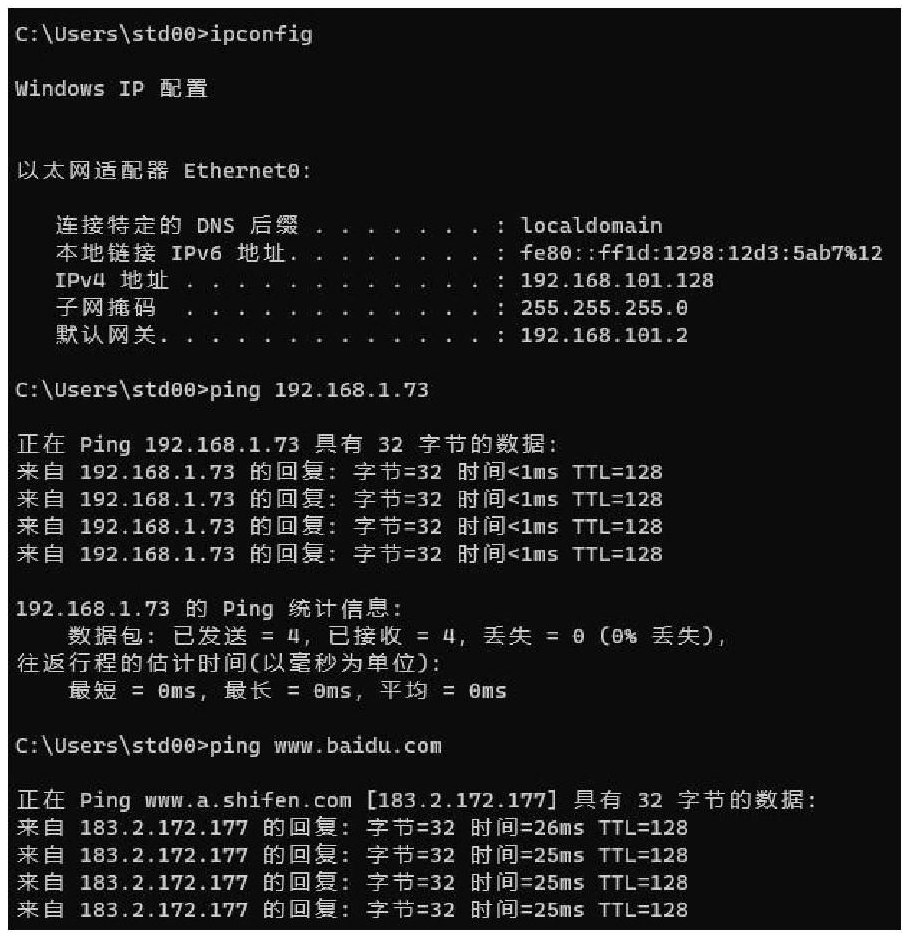
5. 在宿主机命令行中分别执行“ping 192.168.101.128”和“ping www.baidu.com”命令，测试宿主机与虚拟机、外网的连通性显示图 2 信息：
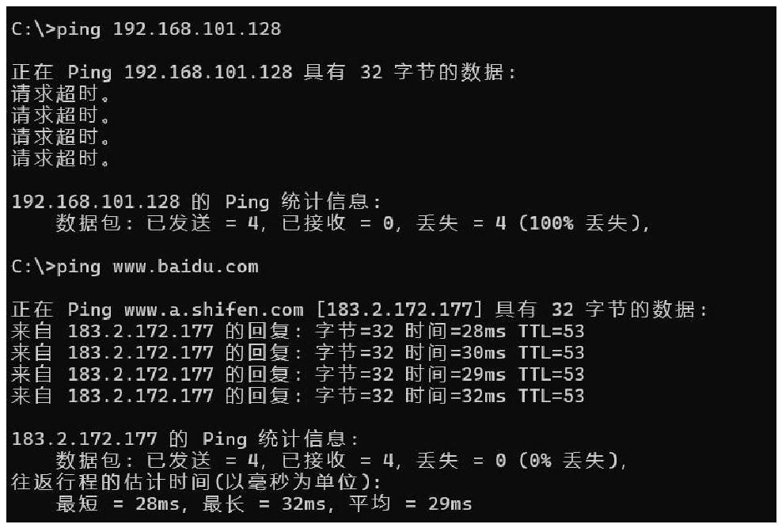
综合第 4 题图 1 的信息，判断下列选项哪一个是合理的解释。（ ）（10 分）
二、根据需求完成虚拟机的设置
虚拟机作为文件服务器，要能够被局域网中的其他主机访问，以及管理员方便远程管理文件服务器。为实现以上要求，需设置虚拟机的网络模式、IP 地址设置和远程桌面的设置。
6. 根据需求，虚拟机的网络连接模式应该选择下列选项中的哪一项（ ），图 3 为设置界面（10 分）
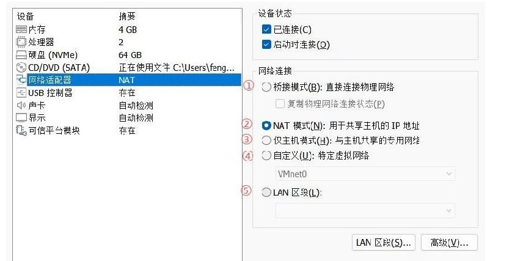
7. 虚拟机作为文件服务器需要配置固定 IP 地址。根据宿主机网络信息（宿主机 IP 为 192.168.1.73，子网掩码为 255.255.255.0，默认网关为 192.168.1.1），以下哪组配置最合理（ ）（10 分）
8. 在虚拟机上搭建文件服务器时，需要将指定文件夹共享给局域网内其他电脑访问。为确保其他用户能够访问并写入文件，以下关于共享权限设置的说法正确的是（ ）（10 分）
9. 为了从其他电脑远程管理文件服务器，需要在 Windows 11 虚拟机上启用远程桌面功能。以下哪个操作路径可以正确启用远程桌面连接（ ）（10 分）
10. 启用远程桌面后，为验证设置是否正确，需在其他主机上执行测试。以下哪种方式可以验证远程桌面连接是否成功（ ）（10 分）
第二题 电商销售数据分析（100 分）
一、应用 WPS 进行数据分析处理（60 分）
运营人员拿到了店员记录的销售数据的 10 条数据，如图 4 所示。需要借助 Wps 和 Python 程序完成数据分析。希望了解销售额、各类商品销售情况。
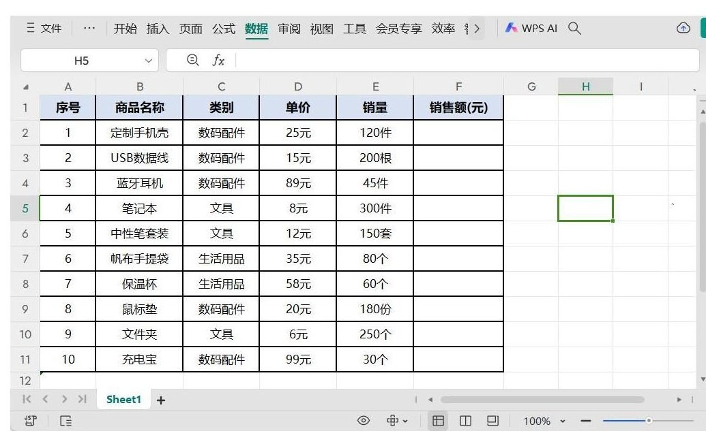
11. 你作为分析人员，拿到数据时，判断数据质量是否满足数据计算和分析的要求，你的判断是（ ）。（10 分）
12. 如果你决定重新整理数据，你如何高效快捷地处理（ ）；（10 分）
13. 统计销售额 ≥100 元的订单有多少笔，应使用下列选项中的哪个公式？（ ）（10 分）
14. 在 WPS 表格中，使用“分类汇总”功能计算各类别商品的平均销售额时，必须先对数据进行的操作是（ ）。（10 分）
15. 在 WPS 表格中执行分类汇总操作后，工作表中会自动插入分类汇总结果。若要取消分类汇总效果恢复原始数据表，正确的操作是（ ）。（10 分）
16. 若要筛选出销售额大于 2000 元的商品记录，使用 WPS 表格的“自动筛选”功能后，在“销售额”列的筛选条件中应设置为（ ）。（10 分）
二、应用程序处理数据（40 分）
为了提高效率，项目组决定用 Python 编写程序来处理部分业务逻辑。请阅读以下代码和场景，完成相关问题。
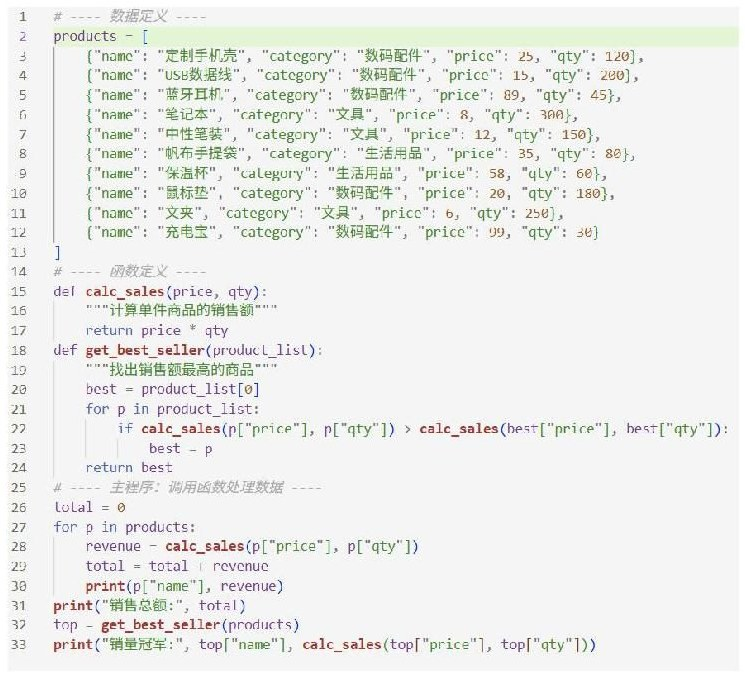
# ---- 数据定义 ----products = [ {"name": "定制手机壳", "category": "数码配件", "price": 25, "qty": 120}, {"name": "USB数据线", "category": "数码配件", "price": 15, "qty": 200}, {"name": "蓝牙耳机", "category": "数码配件", "price": 89, "qty": 45}, {"name": "笔记本", "category": "文具", "price": 8, "qty": 300}, {"name": "中性笔套装", "category": "文具", "price": 12, "qty": 150}, {"name": "帆布手提袋", "category": "生活用品", "price": 35, "qty": 80}, {"name": "保温杯", "category": "生活用品", "price": 58, "qty": 60}, {"name": "鼠标垫", "category": "数码配件", "price": 20, "qty": 180}, {"name": "文件夹", "category": "文具", "price": 6, "qty": 250}, {"name": "充电宝", "category": "数码配件", "price": 99, "qty": 30}]# ---- 函数定义 ----def calc_sales(price, qty): """计算单件商品的销售额""" return price * qtydef get_best_seller(product_list): """找出销售额最高的商品""" best = product_list[0] for p in product_list: if calc_sales(p["price"], p["qty"]) > calc_sales(best["price"], best["qty"]): best = p return best# ---- 主程序：调用函数处理数据 ----total = 0for p in products: revenue = calc_sales(p["price"], p["qty"]) total = total + revenue print(p["name"], revenue)print("销售总额：", total)top = get_best_seller(products)print("销量冠军：", top["name"], calc_sales(top["price"], top["qty"]))17. 代码以“products”变量表示存储 10 件商品信息的数据。此种“列表嵌套字典”的数据结构具有何种特点？（ ）（10 分）
18. 代码的第 17 行对函数 calc_sales(price, qty) 进行了定义。当前存在调用该函数的代码，具体为：revenue = calc_sales(products[1]["price"], products[1]["qty"])，以下说法正确的是（ ）。（10 分）
19. 以下 Python 代码用于根据销售数据判断商品的热销等级。代码中第 10 行输出的结果是（ ）。（10 分）
sales = 120if sales >= 150: level = '爆款'elif sales >= 100: level = '热销'elif sales >= 50: level = '正常'else: level = '滞销'print(level)20. 运营人员需使用一个新函数来计算某类商品的总销售额。已知 calc_sales(price, qty) 函数用于计算单件商品的销售额。以下哪个函数实现是正确的？（10 分）
def calc_category_total(product_list, category): total = 0 for p in product_list: if p["category"] == category: total += calc_sales(p["price"], p["qty"]) return totaldef calc_category_total(product_list, category): total = 0 for p in product_list: if p["category"] != category: total += calc_sales(p["price"], p["qty"]) return totaldef calc_category_total(product_list, category): total = 0 for p in product_list: total += calc_sales(p["price"], p["qty"]) return totaldef calc_category_total(product_list, category): for p in product_list: total = 0 if p["category"] == category: total += calc_sales(p["price"], p["qty"]) return total原卷影像（20 页，点击查看大图）
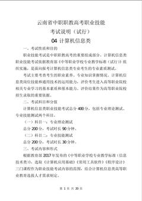
1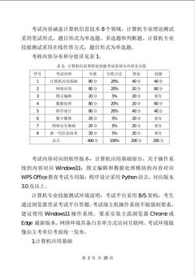
2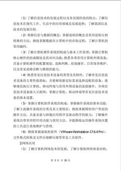
3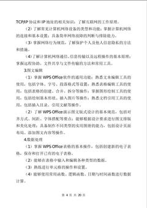
4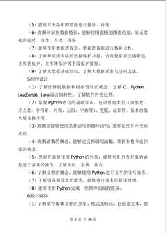
5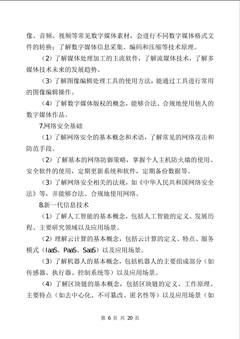
6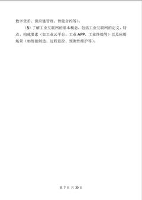
7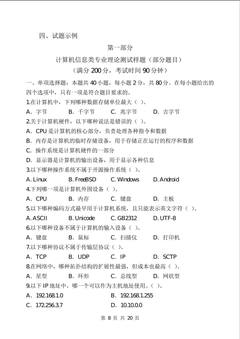
8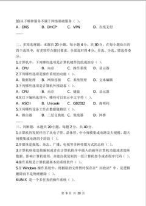
9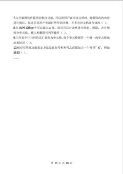
10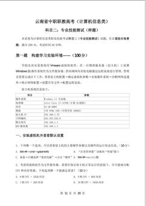
11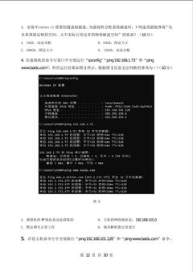
12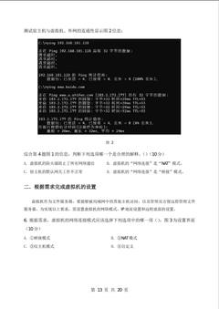
13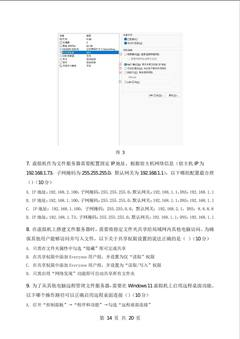
14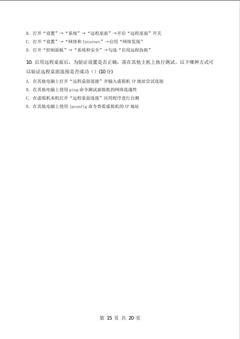
15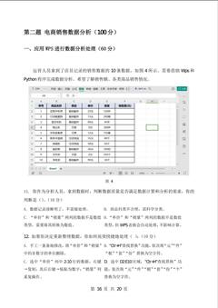
16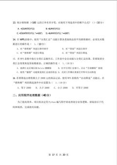
17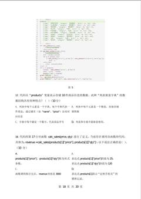
18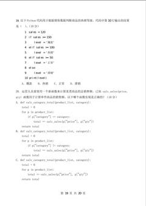
19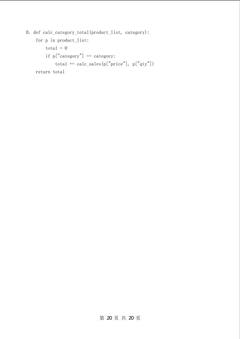
20